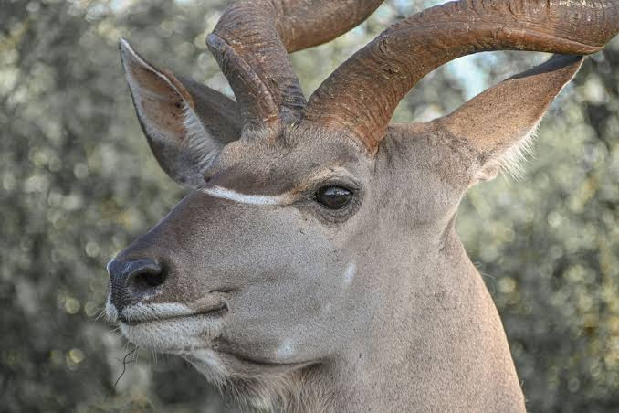
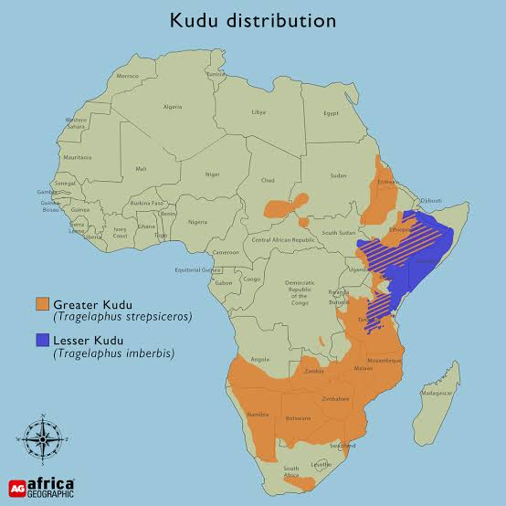
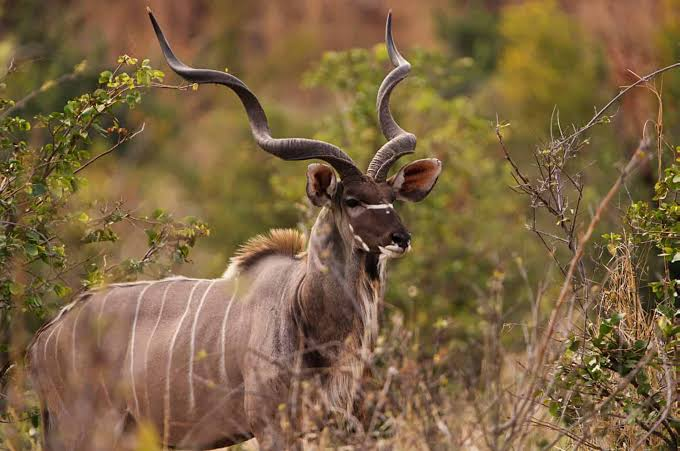
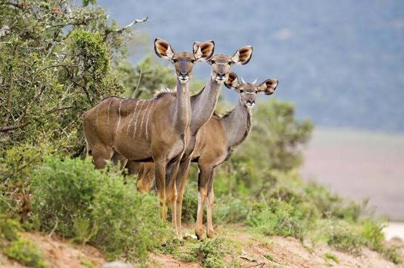
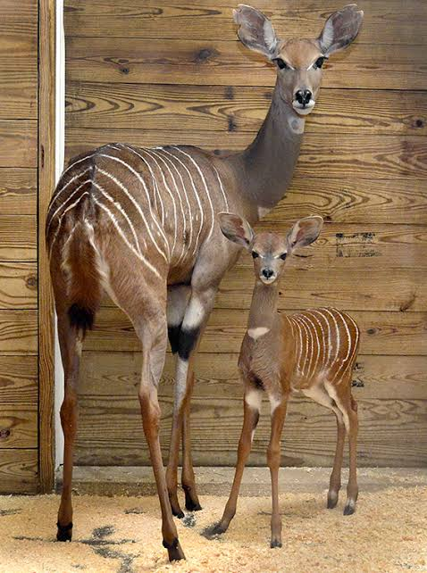
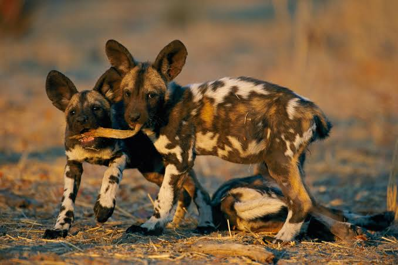

<!DOCTYPE html>
<html lang="en">
<head>
    <meta charset="UTF-8">
    <meta name="viewport" content="width=device-width, initial-scale=1.0">
    <title>Greater Kudu Dossier</title>
</head>
<body>
    
</body>
</html>

<header>
<h1>Species Page: Greater Kudu</h1>
</header>

<nav>
    <ul>
<li><a href="african-adventure.html">Home</a></li>
    </ul>
</nav>

<main>
    <article>
        <section id="basic-info">
            <h2>Scientific Information</h2>
            <p><strong>Common Name:</strong> Greater Kudu</p>
            <p><strong>Status/Conservation:</strong> Least Concern <sup><a href="#ref1">[1]</a></sup></p>
            <section id="classification">
                <h2>Full Scientific Classification</h2>
                <table border="1">
                    <tr><th>Taxonomic Rank</th><th>Classification</th></tr>
                    <tr><td>Kingdom</td><td>Animalia</td></tr>
                    <tr><td>Phylum</td><td>Chordata</td></tr>
                    <tr><td>Subphylum</td><td>Vertebrata</td></tr>
                    <tr><td>Class</td><td>Mammalia</td></tr>
                    <tr><td>Subclass</td><td>Theria</td></tr>
                    <tr><td>Order</td><td>Artiodactyla</td></tr>
                    <tr><td>Family</td><td>Bovidae</td></tr>
                    <tr><td>Genus</td><td>Tragelaphus</td></tr>
                    <tr><td>Species</td><td>Tragelaphus strepsiceros</td></tr>
                </table>
            </section>
         <section id="physical-profile">
            <h2>Physical-profile</h2>
            <dl>
               <dt>Size range</dt>
               <dd> Shoulder height measures 3.9 to 5.2 feet (1.2 to 1.6 meters), with a body length between 6.1 and 8 feet (1.8 to 2.5 meters). </dd>

               <dt>Weight</dt>
               <dd> Weighs 419 to 595 pounds (190 to 270 kg), with males being significantly larger than females.</dd>
               <dt>Identification Markings</dt>
               <dd>Identification Markings: Tawny grey to reddish-brown coats marked with 6 to 10 distinct vertical white stripes along their flanks, a dark neck mane, a prominent white chevron stripe between their eyes, and majestic spiral horns possessed exclusively by males.  
                <sup><a href="#ref2">[2]</a></sup></dd>
           </dl>
           
       </section>
       <section id="habitat-geography">
        <h2>Habitat & Geography</h2>
        <p>Habitats: Dense bush-woodlands, rocky hillsides, mixed scrub forests, and mopane bush, avoiding open plains to evade predators.
            Distribution: Native across eastern and southern regions of sub-Saharan Africa.</p>
<h3>Distribution Map</h3>

        </section>
<section id="ecology and behavior">
    <h2>Ecology and Behavior</h2>
<h3>Feeding and Diet</h3>
<p>Selective browsers feeding on leaves, shoots, seeds, seed pods, vines, and fresh green vegetation, capable of utilizing their height and narrow muzzles to select choice foliage.</p>
<ul>
    
</section>
<section id="communication and social behavior">
    <h2>Communication and Social Behavior</h2>
    <p>Living in small, loose maternal herds consisting of females and their offspring, while adult males tend to be solitary or form small bachelor groups, communicating via sharp alarm barks, low grunts, and scent markings.</p>
    
</ol>
<h3>Life Cycle and Breeding Behaviors</h3>
                <p>Females give birth to a single calf after a gestation period of roughly 7 to 8 months, keeping the newborn hidden in dense cover during its early weeks of life for optimal protection.</p>
                
            
            
                <section id="Predators">
    <h2>Predators</h2>
    <p>Apex predators including lions, leopards, cheetahs, spotted hyenas, and African wild dogs actively prey upon greater kudus, with vulnerable calves facing the highest risk.</p>
    
</section>
    </article>
</main>